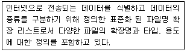
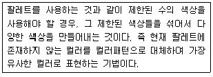
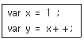
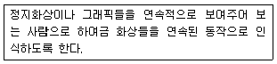
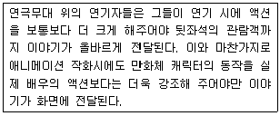

멀티미디어콘텐츠제작전문가 (2017-05-07 기출문제)
1과목: 멀티미디어개론
1. OSI 7계층 중 전송계층에서 사용하는 프로토콜은?
- FTP
- SMTP
- HTTP
- UDP
(정답률: 62%)

2. 서비스거부공격(Denial of Service)과 관련이 가장 적은 것은?
- Fraggle Attack
- Smurf Attack
- Land Attack
- Trojan Attack
(정답률: 60%)
3. 가상세계에 카메라로 포착된 물건, 사람등과 같은 현실 이미지를 더해 가상환경과 실시간으로 상호 작용할 수 있는 기술은?
- 표면웹
- 로보어드바이저
- 브레드크럼즈
- 증강 가상
(정답률: 84%)
4. 지향성 마이크를 음원가까이에 배치하면 마이크의 낮은 음역 주파수 특성이 상승하는 효과는?
- 회절효과
- 왜곡효과
- 근접효과
- 반사효과
(정답률: 94%)
5. IPv6에 대한 설명으로 거리가 가장 먼 것은?
- 주소를 표현하기 위해 16Byte를 사용한다.
- 새로운 기술이나 응용 분야에 의해 요구되는 프로토콜의 확장을 허용하도록 설계되었다.
- 암호화와 인증 옵션들은 패킷의 신뢰성과 무결성을 제공한다.
- 주소를 보다 읽기 쉽게 하기 위해 8진수 콜론 표기로 규정한다.
(정답률: 52%)
6. 사물통신(M2M), 사물인터넷과 같이 대역폭이 제한된 통신환경에서 최적화하여 개발된 푸시 기술 기반의 경량 메시지 전송 프로토콜은?
- Baas
- MQTT
- N-SCREEN
- Geo-fence
(정답률: 75%)
7. 비밀키 암호기법이 아닌 것은?
- AES
- ESS
- DES
- Blowfish
(정답률: 44%)
8. 임베디드 리눅스 커널의 주요 구성요소가 아닌 것은?
- 장치 관리자
- 파일 관리자
- 사용자 관리자
- 메모리 관리자
(정답률: 70%)
9. UNIX 시스템의 구성요소가 아닌 것은?
- Shell
- Kernel
- Input
- Utility
(정답률: 60%)
10. 리눅스에서 프로세스의 메모리, CPU사용량, 실행시간 등을 확인할 수 있는 명령어는?
- top
- ls
- qs
- emac
(정답률: 56%)
11. Brute-Force 공격에 해당하는 설명으로 맞는 것은?
- 통신망 중간에서 인증 정보를 얻어내는 방법이다.
- 모든 경우의 수를 대입하여 암호 해독을 시도한다.
- 서버가 처리할 수 있는 용량 이상의 패킷을 보내 서비스를 마비시킨다.
- 바이러스를 통해 해당 시스템에서 원하는 정보를 습득한다.
(정답률: 59%)
12. 컴퓨터 그래픽스 용어 중 캘리브레이션(Calibration)의 의미로 올바른 것은?
- 우연적인 기법과 순수 미술의 느낌을 내는 작업을 뜻한다.
- 하드웨어 장치와 소프트웨어 장치를 총칭하는 의미 이다.
- 모니터의 색상과 인쇄물의 색상차이를 보정하는 작업을 말한다.
- 컬러 이미지를 그레이 스케일로 변경하는 작업을 뜻한다.
(정답률: 84%)
13. 모바일 환경에서 영상검색을 하기 위해 간략화 하면서도 확장성 있는 메타데이터 표준 기술은?
- MPEG-7 CDVS
- MPEG-2 CD
- MPEG-9
- MPEG-1
(정답률: 78%)
14. 흑백 및 컬러 정지화상을 위한 국제 표준안으로 이미지의 압축 및 복원 방식에 관한 표준안은?
- JPEG
- BMP
- GIF
- TIFF
(정답률: 79%)
15. 군용 통신에 이용 되었던 대역 확산(Spread Spectrum) 방식을 이동 통신에 이용한 방식으로 세계 최초로 디지털 셀룰러 전화에 채택하여 상용화된 기술은?
- FDMA
- TDMA
- FDDI
- CDMA
(정답률: 74%)
16. 다음 보기가 설명하는 것은?

- Plug-In
- MIME
- Cookie
- URL
(정답률: 56%)
17. 미리 설계된 시간이나 임의 환경조건이 충족되면 스스로 모양을 변경 또는 제조하여 새로운 형태로 바뀌는 제품을 3D 프린팅 하는 기술은?
- 에그노스틱
- 4D 프린팅
- 민하드웨어
- 시멘틱
(정답률: 87%)
18. 개인 PC보안을 위한 방법으로 적합하지 않은 것은?
- 개인 방화벽을 설정한다.
- 특수문자와 숫자를 포함한 8자 이상의 암호를 사용한다.
- 보안 패치 관리를 위해 자동 업데이트를 설정한다.
- Guest 계정을 활성화한다.
(정답률: 91%)
19. iOS나 OS X의 앱을 개발하기 위해 사용하던 오브젝티브 -C 보다 쉽고 빠르며, iOS나 OS X 운영체계에 최적화된 프로그래밍 언어는?
- 스위프트
- 파스칼
- 델파이
- 액션스크립트
(정답률: 59%)
20. UNIX에서 사용자의 요구를 해석해서 요청 서비스를 실행시키는 명령어 해석기는?
- Nucleus
- Kernel
- Shell
- Core
(정답률: 75%)
2과목: 멀티미디어기획및디자인
21. 다음 중 우리나라 텔레비전 광고의 유형이 아닌 것은?
- 프로그램 광고
- 스팟(Spot) 광고
- 특집광고
- 네온사인 광고
(정답률: 88%)
22. 다음 중 두 색이 인접해 있을 때 서로 인접한 부분이 경계로부터 멀리 떨어져 있는 부분보다 색상, 명도 채도의 대비 현상이 더욱 강하게 일어나는 현상은?
- 보색대비
- 명도대비
- 연변대비
- 색상대비
(정답률: 74%)
23. 다음 중 아이디어 발상에 대한 설명으로 적합하지 않은 것은?
- 생각하거나 미루어 짐작하는 것
- 사실을 전제로 새로운 사실을 만드는 것
- 궁극적인 효과를 제시하고 분석하는 것
- 체계적인 사고방법에 의해 훈련되는 것
(정답률: 52%)
24. 디자인의 분류 중 2차원 디자인이 아닌 것은?
- 텍스타일 디자인
- 벽지 디자인
- 액세서리 디자인
- 포토 디자인
(정답률: 86%)
25. 다음 중 무채색은?
- 청록
- 회색
- 보라
- 분홍
(정답률: 86%)
26. 비트맵 이미지의 설명으로 거리가 가장 먼 것은?
- 여러 개의 점(Pixel)으로 표시하는 방식이다.
- 작성된 그림을 확대 또는 축소할 경우에는 그림의 모양, 외곽선 부분이 변형된다.
- 점(Pixel)의 수가 많을수록 해상도가 좋다.
- 일러스트레이터, CAD프로그램이 가장 대표적인 방식이다.
(정답률: 81%)
27. 디자인 요소들 간의 관계 조절을 원활하게 유지하기 위하여 적용되는 디자인 조건은?
- 질서성
- 심미성
- 합목적성
- 경제성
(정답률: 73%)
28. 다음 내용에 관한 설명으로 옳은 것은?

- 디더링(Dithering)
- 컬러조정(Color Adjustment)
- 메타포(Metaphor)
- 컬러변화(Color Variation)
(정답률: 63%)
29. 웹 디자인에서 내비게이션에 대한 설명으로 거리가 먼 것은?
- 웹 콘텐츠를 분류하고 체계화시킨 후 이들을 연결시켜 방문자로 하여금 웹 사이트를 이용할 수 있게 하는 체계를 말한다.
- 일관성 있는 아이콘과 그래픽을 사용하여 사용자가 홈페이지 어디서라도 길을 잃지 않고 필요한 정보를 쉽게 얻을 수 있도록 하는 것이다.
- 웹 사이트의 전체적인 분위기를 결정하고 개인의 홍보나 회사의 홍보, 또 사용자간의 자발적 참여와 커뮤니티를 형성한다.
- 사이트의 이동경로나 이동방법, 이동을 돕는 구조와 인터페이스를 모두 포함하는 개념이다.
(정답률: 79%)
30. 타이포그래피의 조건에 대한 설명으로 가장 적합한 것은?
- 특이하면서도 단순한 게슈탈트로 확대나 축소되어도 변하지 않아야 한다.
- 시각요소들의 명료도, 가독성 정도를 고려하여 서체의 미적인 면과 내용표현의 적절성, 표현성을 갖추어야 한다.
- 규모, 내용, 이념 등을 강조할 수 있는 커뮤니케이션 수단이어야 한다.
- 사물의 성격, 목적, 용도 등을 파악하여 적절한 의미의 상징성을 고려하여야 한다.
(정답률: 66%)
31. 다음 중 인쇄 시에 필요한 출력 컬러 방식은?
- CMYK 방식
- RGB 방식
- HSV 방식
- LAB 방식
(정답률: 80%)
32. 점을 생성하기 위한 방법이 아닌 것은?
- 입체와 면의 교차
- 선과 선의 교차
- 선의 양쪽 끝
- 면과 선의 교차
(정답률: 78%)
33. 색의 3속성 중 사람의 눈에 가장 민감하게 반응하는 요소는?
- 색상
- 명도
- 채도
- 순도
(정답률: 65%)
34. 감산혼합의 3원색이 아닌 것은?
- 시안(Cyan)
- 마젠타(Magenta)
- 노랑(Yellow)
- 검정(Black)
(정답률: 81%)
35. 배색에 관한 설명 중 거리가 가장 먼 것은?
- 이미지를 결정시키는 배색의 주요 요인으로 톤, 색상, 대비 항목 등이 있다.
- 동일 색상 배색 사이에서는 명도, 채도의 차이가 발생 하지 않는다.
- 배색은 한 부분에서만 효과를 보는 것이 아니라 문자나 그림 등가 같이 조합이 되었을 때 복합적인 효과가 나타난다.
- 보색에 의한 배색은 그림 전체의 색채와는 원만한 조화를 얻기 어려우므로 강조의 효과를 얻고자 할 때 적절히 사용한다.
(정답률: 79%)
36. 전통적인 사용자 인터페이스로 키보드에 의해 입력하고 결과를 보여주는 방식의 명령어 체계는 다음 중 무엇인가?
- Web Contents
- Visual Composition
- Character-Based UI
- Graphic UI
(정답률: 46%)
37. 현재 또는 잠재적인 소비자의 욕구를 충족시켜주는 제품 및 서비스에 대해 계획하고, 가격을 결정하며, 판촉활동을 하고 배포하도록 계획된 경영 활동의 전반적인 체계를 무엇이라 하는가?
- 시장조사
- 리서치
- 기획
- 마케팅
(정답률: 76%)
38. 상호작용(Interaction)에 관한 내용 중 옳지 않은 것은?
- 상호작용의 정도가 클수록 프로그래밍의 역할이 중요해진다.
- 상호작용의 인터페이스에는 주로 이미지, 텍스트 등을 사용한다.
- 게임 연출의 경우에는 상호작용 디자인이 게임의 재미를 결정하는 가장 핵심 요소이다.
- 게임의 경우 상호작용은 중요한 반면 웹의 경우 실시간 상호작용은 적은 편이다.
(정답률: 40%)
39. 단행본, 학술지, 문학지, 사전 등 편집디자인에 있어서 메시지를 전달하는 데 가장 중요한 것은?
- 타이포그래피
- 일러스트레이션
- 사진
- 오브제
(정답률: 74%)
40. 다음 중 직선에 대한 설명으로 잘못 된 것은?
- 수평선은 평온, 고요, 안락, 편안함을 나타내는 형태이다.
- 대각선은 따뜻함과 차가움이 포함된 무한한 운동성을 나타내는 형태이다.
- 지그재그 선은 특정한 거리를 두고 방향이 바뀌는 선이다.
- 직선은 대범한 펼쳐짐과 화려함을 느낄 수 있다.
(정답률: 67%)
3과목: 멀티미디어저작
41. XML의 문서형식 정의(DTD)에서 사용하는 세 가지 주요 구성요소가 아닌 것은?
- Element
- Comment
- Attribute
- Entity
(정답률: 50%)
42. 자바스크립트의 문자열 형태로 나타낸 숫자들(예＞ '123')을 정수나 실수 타입으로 인식하도록 변환하는 역할의 내장 함수나 내장 객체가 아닌 것은?
- String
- Number
- parseInt
- parseFloat
(정답률: 63%)
43. 데이터베이스 뷰를 정의하기 위한 명령 형태는?
- create view v from ＜query expression＞;
- insert view v to ＜query expression＞;
- create view v as ＜query expression＞;
- create view v into ＜query expression＞;
(정답률: 69%)
44. HTML 문서 작성 시 ＜BODY＞ 태그 안에 사용하는 속성으로 한 번 이상 방문한 적이 있는 링크의 색상을 정의 하는 것은?
- VLINK
- TABLE
- RADIO
- KLINK
(정답률: 75%)
45. HTML5의 태그에 대한 설명으로 틀린 것은?
- ＜article＞ : 제목과 부제목 표시
- ＜address＞ : 사이트 제작자 정보, 연락처 정보 표시
- ＜nav＞ : 문서를 연결하는 내비게이션 링크
- ＜footer＞ : 제작 정보와 저작권 정보 표시
(정답률: 56%)
46. 객체지향 분석 모델인 Rumbaugh의 OMT(Object Modeling Technique)에서 자료 흐름도를 이용한 것은?
- Relational Modeling
- Object Modeling
- Functional Modeling
- Dynamic Modeling
(정답률: 52%)
47. 자바스크립트의 생성자 함수를 이용하여 객체를 생성할 때 사용하는 예약어는?
- function
- instance of
- typeof
- new
(정답률: 77%)
48. SQL 데이터 조작문에 속하지 않는 것은?
- GRANT
- SELECT
- UPDATE
- INSERT
(정답률: 66%)
49. 자바스크립트에서 String 객체 메서드에 대한 설명으로 틀린것은?
- sup( ) : 위 첨자
- sub( ) : 아래 첨자
- strike( ) : 깜박이는 효과
- bold( ) : 볼드체 문자
(정답률: 80%)
50. 다음 액션스크립트에서 변수 y에 대입될 값은?

- 1
- 2
- 3
- 4
(정답률: 52%)
51. 공간 데이터베이스를 위한 공간 인덱싱 기법 중 점, 선, 다각형 객체를 모두 지원 할 수 있는 것은?
- R-트리
- 메트릭스 쿼드 트리
- K-D 트리
- K-D-B 트리
(정답률: 53%)
52. HTML 파일에서 순서가 있는 목록 리스트들을 포함하여 출력할 때 사용하는 태그명은?
- ol 태그
- dl 태그
- li 태그
- ul 태그
(정답률: 59%)
53. 시스템 카탈로그에 대한 설명으로 틀린 것은?
- 사용자가 시스템 카탈로그 직접 갱신 가능
- 일반 질의어를 이용해 내용 검색 가능
- DBMS가 생성하고, 유지하는 데이터베이스 내의 특별한 테이블의 집합체
- 데이터베이스 스키마에 대한 정보 제공
(정답률: 58%)
54. 데이터베이스에서 트랜잭션의 실행이 실패하였음을 알리는 연산자로 트랜잭션이 수행한 결과를 원래의 상태로 원상 복귀시키는 연산은?
- Rollback
- Commit
- Stack
- Backup
(정답률: 81%)
55. DOM에서 CharacterData 인터페이스가 제공하는 메소드로 틀린 것은?
- getData
- setData
- selectionData
- insertData
(정답률: 47%)
56. 객체지향 시스템에서 함수 이름과 연산자가 여러 목적으로 사용되는 것은?
- 정보은닉
- 캡슐화
- 다형성
- 상속성
(정답률: 80%)
57. 관계대수에서 순수관계 연산자가 아닌 것은?
- Division
- Projection
- Join
- Union
(정답률: 65%)
58. XQuery(XML Query Language)에 대한 설명으로 거리가 먼 것은?
- Sum과 Count같은 집계함수 제공
- 다양한 내장 함수 제공
- FOR-LET-WHILE-RESULT 구조로 질의
- 사용자 정의 함수 지원
(정답률: 63%)
59. HTML5에서 캔버스(Canvas)에 색이 채워진 텍스트를 출력하기 위한 함수는?
- fillText( )
- strokeText( )
- moveTo( )
- lineTo( )
(정답률: 80%)
60. 자바스크립트의 RegExp 객체에 대한 설명으로 거리가 먼 것은?
- new 키워드를 이용하여 생성할 수 있다.
- 리터럴을 이용하여 표현할 수 있다.
- 'i' 플래그는 대소문자를 구분하여 패턴 일치 여부를 검사한다.
- 'm' 플래그는 다중 라인의 문자열에서 패턴 일치 여부를 검사한다.
(정답률: 54%)
4과목: 멀티미디어제작기술
61. 사운드의 기본 요소인 주파수(Frequency)에 관한 설명 중 가장 거리가 먼 것은?
- 초당 사운드 파형의 반복 횟수를 의미한다.
- 주파수가 크면 고음이고 작으면 저음이 된다.
- 일반적으로 사람이 낼 수 있는 주파수대는 약 100Hz ~6KHz이다.
- 사운드 파형의 기준선에서 최고점까지의 거리를 의미한다.
(정답률: 57%)
62. 다음의 촬영 기법 중 앙각 촬영에 대한 설명으로 옳은 것은?
- 하이앵글(High Angle) 촬영 기법이다.
- 위에서 아래로 보이는 시각을 표현한다.
- 촬영된 피사체가 위압적으로 느껴지는 느낌의 영상을 얻을 수 있다.
- 버드아이 뷰(Bird Eye View) 기법으로도 불린다.
(정답률: 74%)
63. 다음 중 벡터 그래픽 파일 형식인 것은?
- BMP
- WMF
- GIF
- TGA
(정답률: 45%)
64. 그래픽 태블릿(Graphic Tablet)의 설명 중 맞는 것은?
- 손으로 쓴 글씨 입력에는 불편한 점이 있다.
- 정확한 위치정보의 입력이 불가능하다.
- 섬세한 그림제작에 불편한 점이 있다.
- 평판 태블릿, 마우스와 스타일러스로 구성된다.
(정답률: 85%)
65. 렌더링 과정 중에서 물체의 입체감을 나타내기 위하여 물체의 표면에 색상과 명암을 표현하는 과정을 무엇이라 하는가?
- 매핑
- 은면의 제거
- 쉐이딩
- 레이트레이싱
(정답률: 70%)
66. 음의 성질을 표시하는 음의 3요소가 아닌 것은?
- 음원
- 주파수
- 진폭
- 음색
(정답률: 72%)
67. 아날로그 신호를 디지털 신호로 변환하는 과정에서 실제의 신호 크기를 미리 설정한 몇 개의 단계 중의 하나로 변환하는 기능을 무엇이라 하는가?
- 보간(Interpolation)
- 명세화(Specification)
- 비율(Rate)
- 양자화(Quantization)
(정답률: 76%)
68. 모션캡쳐(Motion Capture)는 크게 광학(Optical)방식과 자기(Magnetic)방식으로 구분된다. 다음 중 광학방식의 특징이 아닌 것은?
- 자기 방식에 비해 모션캡쳐 시 넓은 캡쳐 공간을 필요로 한다.
- 철 등의 물체에 영향을 받아 신호가 왜곡될 수 있어 실험실 환경에 주의를 기울여야 한다.
- 자기 방식에 비해 더 오랜 캡쳐 셋업 시간이 필요하다.
- 적외선 마커를 액터의 관절에 부탁 촬영한 후 공간상의 위치를 파악한다.
(정답률: 64%)
69. GIF에 대한 설명으로 가장 거리가 먼 것은?
- 16비트 컬러를 지원하는 대표적인 압축 포맷이다.
- GIF89a 에서는 애니메이션 기능을 제공한다.
- 웹에서는 JPEG 포맷과 함께 가장 널리 사용된다.
- 투명색을 지정하여 투명효과를 줄 수 있다.
(정답률: 67%)
70. 3차원 그래픽스의 생성과정 중 모델링에 관한 설명으로 거리가 먼 것은?
- 3차원 스캔에 의한 모델링은 현재 기술적으로 실현 불가능하다.
- 와이어프레임 모델은 물체의 형태를 표현한 모델이다.
- 모델링이란 3차원 좌표계를 사용하여 컴퓨터로 물체의 모양을 표현하는 과정을 말한다.
- 다각형 표현 모델은 다각형 면을 이용하여 3차원 모델을 표현한다.
(정답률: 78%)
71. 영상단위 중 동일한 시간과 장소에서 일어나는 일련의 상황이나 사건을 나타내며, 여러 개의 컷(Cut)이 모여 하나의 장면을 이루는 것은?
- 테이크(Take)
- 시퀸스(Sequence)
- 씬(Scene)
- 숏(Shot)
(정답률: 76%)
72. 넌 리니어(Non-Linear) 편집에 대한 설명으로 맞는 것은?
- 순차적인 편집 방식이다.
- Tape과 Tape의 편집은 실시간으로 이루어진다.
- 편집 변동 시 시간소모와 화질열화의 문제점을 가진다.
- 원하는 이미지나 음향의 복사 및 위치변경이 용이하다.
(정답률: 70%)
73. 음원과 관측자가 상대적인 운동을 하고 있을 때, 관측자가 듣는 진동수와 음원의 진동수가 틀리게 되는 것을 무엇이라 하는가?
- 도플러 효과
- 광전효과
- 소리의 공명현상
- 맥놀이 현상
(정답률: 78%)
74. 영화나 TV 방송에서 편집이 완성된 비디오를 보면서 사람의 발자국 소리, 유리 깨지는 소리와 같은 효과음을 스튜디오에서 소도구등을 이용하여 사람이 직접 만들어내는 작업을 무엇이라고 하는가?
- 폴리 (Foley)
- A/B롤
- 신디사이저(Symthesizer)
- 샘플러(Sampler)
(정답률: 69%)
75. 다음은 음향 신호의 변환 시 아날로그 방식과 디지털 방식의 특징이다. 옳지 않은 것은?
- 아날로그 신호는 전기회로의 구성이 복잡하다.
- 디지털 신호는 아날로그 방식에 비해 신호처리 속도가 빠르다.
- 아날로그 신호는 잡음에 의해 신호가 변할 수 있다.
- 디지털 신호는 정보의 조작이 비교적 쉽다.
(정답률: 55%)
76. 다음에서 설명하는 애니메이션의 기본 원리는?

- 역운동학
- 모핑
- 잔상효과
- 스톱모션
(정답률: 45%)
77. 다음에 해당하는 애니메이션 제작기법은 무엇인가?

- 반복(Cycling)
- 이즈 인/아웃(Ease In/Out)
- 도려내기(Cut-Out)
- 과장(Exaggeration)
(정답률: 90%)
78. 물체 경계면의 픽셀을 물체의 색상과 배경의 색상을 혼합해서 표현하여 경계면이 부드럽게 보이도록 하는 기법은?
- 투영(Projection)
- 디더링(Dithering)
- 모델링(Modeling)
- 앤티앨리어싱(Antialiasing)
(정답률: 78%)
79. 전송대역이 넓어 비 압축 방식으로 신호를 전달할 수 있으며, 연결기기 간에 쌍방향 통신을 통해 최적의 해상도를 자동으로 찾아 재생을 지원 할 수 있는 디지털 신호 전송방식은?
- S-Video
- 컴포넌트
- DV
- HDMI
(정답률: 77%)
80. 다음 컬러모델 중 빛의 삼원색을 이용하여 색을 표현하며 TV나 컴퓨터모니터 등에서 많이 사용되는 것은?
- CMY
- YUV
- YIQ
- RGB
(정답률: 85%)